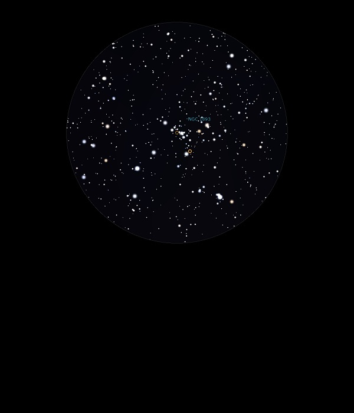

IC 410 and NGC 1893
Emission
Nebula and Open Cluster in Auriga
Mag 7.5 for
Open Cluster
IC
410 and NGC 1893
The Tadpole Nebula
10/11/13
Just a
small arc of a dozen or so stars in 12mm
03/12/16
Just the merest hint of nebulosity surrounding a very sparse
and faint Open Cluster, NGC 1893
Better in 12mm with UHC filter but sitting in a really lovely
FOV